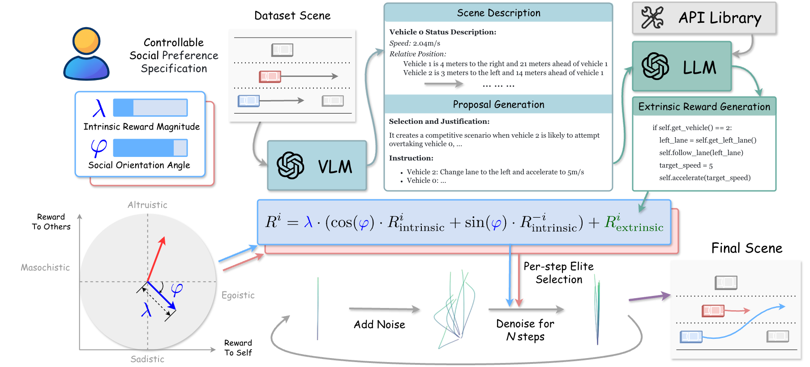
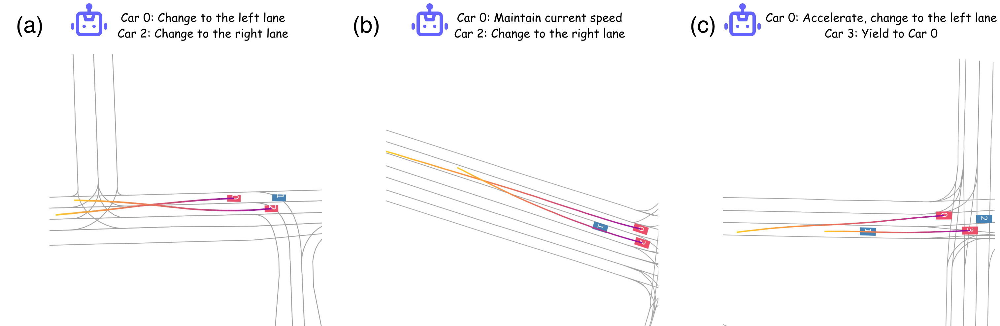

SocialDriveGen
1. 摘要与问题定义
SocialDriveGen: Generating Diverse Traffic Scenar- ios with Controllable Social Interactions Jiaguo Tian1, Zhengbang Zhu1, Shenyu Zhang1, Li Xu2, Bo Zheng2, Xu Liu2, Weiji Peng2, Shizeng Yao2, Weinan Zhang1 1Shanghai Jiao Tong University, 2Chongqing Changan Automobile Co. Ltd Abstract The generation of realistic and diverse traffic scenarios in simulation is essential for developing and evaluating autonomous driving systems. However, most simula- tion frameworks rely on rule-based or simplified models for scene generation, which lack the fidelity and diversity needed to represent real-world driving. While recent advances in generative modeling produce more realistic and context-aware traffic interactions, they often overlook how social preferences influence driving behav- ior. SocialDriveGen addresses this gap through a hierarchical framework that inte- grates semantic reasoning and social preference modeling with generative trajectory synthesis. By modeling egoism and altruism as complementary social dimensions, our framework enables controllable diversity in driver personalities and interaction styles. Experiments on the Argoverse 2 dataset show that SocialDriveGen generates dive
2. 方法与技术细节
下面内容为论文中的关键技术句段抽取，并结合关键词（method / architecture / loss / ablation / experiment 等）组织，目标是帮助快速把握方法与实验逻辑，而不是仅做翻译。
- method integrates this guidance throughout the entire denoising process.
- styles. Experiments on the Argoverse 2 dataset show that SocialDriveGen generates
- The generation of realistic and diverse traffic scenarios in simulation is essential
3. 关键图示


4. 相关工作与技术脉络
基于标题关键词在 arXiv 自动检索到的相关论文（用于补充技术上下文）：
5. 解读与思考
这篇论文的核心价值在于： (1) 把 feedforward / 场景建模问题转化为可扩展的工程路径； (2) 通过训练目标与表示设计平衡质量和效率； (3) 为自动驾驶仿真或可控 world model 提供可连接的上层接口。 建议后续重点对照 ablation 与 error case，判断其泛化边界。